Tutorial 2: Quality control
Emanuel Michele Soda
Istituto Europeo Oncologia (IEO), Milano, Italyemanuelsoda@gmail.com
Elena Ceccacci
Istituto Europeo Oncologia (IEO), Milano, Italyelena.ceccacci@ieo.it
2026-10-18
Source:vignettes/Tutorial_2_Quality_control.Rmd
Tutorial_2_Quality_control.RmdAbout this tutorial
Before looking for hits, check that the screen worked: that every sample was sequenced deeply enough, that the library was not lost, and that replicates agree. A problem found here (a failed replicate, a bottleneck) would otherwise produce false hits later.
This is the second of three tutorials. It starts from the object built in 1. Getting your data into ScreenR:
data(count_table)
data(annotation_table)
counts <- count_table
colnames(counts) <- c(
"Barcode", "Time1", "Time2", "Time3_TRT_A", "Time3_TRT_B", "Time3_TRT_C",
"Time3_CTRL_A", "Time3_CTRL_B", "Time3_CTRL_C",
"Time4_TRT_A", "Time4_TRT_B", "Time4_TRT_C",
"Time4_CTRL_A", "Time4_CTRL_B", "Time4_CTRL_C"
)
counts <- filter(counts, Barcode != "*")
groups <- factor(c(
"T1/T2", "T1/T2",
rep("Time3_TRT", 3), rep("Time3_CTRL", 3),
rep("Time4_TRT", 3), rep("Time4_CTRL", 3)
))
object <- create_screenr_object(
table = counts, annotation = annotation_table, groups = groups
)
object <- remove_all_zero_row(object)
object <- normalize_data(object)
object <- compute_data_table(object)Many plots accept a palette, one color per sample. Here
replicates of the same condition share a color:
palette <- c(
"#66c2a5", "#fc8d62", rep("#8da0cb", 3), rep("#e78ac3", 3),
rep("#a6d854", 3), rep("#ffd92f", 3)
)| Step | Question | Functions |
|---|---|---|
| 1 | Was each sample sequenced deeply enough? |
mapped_reads(), plot_mapped_reads()
|
| 2 | Are the counts distributed similarly in all samples? | plot_mapped_reads_distribution() |
| 3 | How many barcodes were lost? |
barcode_lost(), plot_barcode_lost(),
plot_barcode_lost_for_gene()
|
| 4 | Do replicates agree? | plot_replicate_correlation() |
| 5 | Is the library still evenly represented? |
compute_gini(), plot_gini()
|
| 6 | Do samples cluster by condition? |
plot_mds(), plot_pca(),
plot_explained_variance()
|
| 7 | Which normalization should I use? | normalize_data() |
Step 1: sequencing depth
The number of reads assigned to barcodes in each sample.
mapped_reads(object)
#> # A tibble: 14 × 2
#> Sample Mapped
#> <fct> <int>
#> 1 Time1 10671757
#> 2 Time2 9799724
#> 3 Time3_TRT_A 6824877
#> 4 Time3_TRT_B 9107354
#> 5 Time3_TRT_C 9717868
#> 6 Time3_CTRL_A 9485195
#> 7 Time3_CTRL_B 9016812
#> 8 Time3_CTRL_C 9568624
#> 9 Time4_TRT_A 8933915
#> 10 Time4_TRT_B 9883209
#> 11 Time4_TRT_C 12325124
#> 12 Time4_CTRL_A 10351136
#> 13 Time4_CTRL_B 9180192
#> 14 Time4_CTRL_C 9315365
plot_mapped_reads(object, palette = palette) +
theme(axis.text.x = element_text(angle = 45, hjust = 1))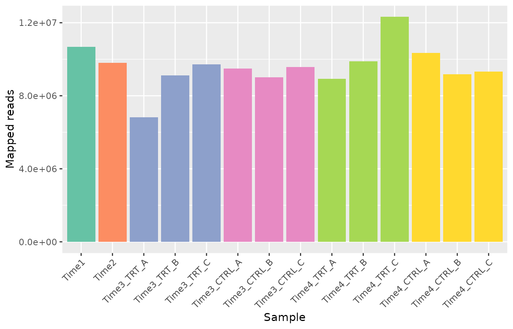
What to look for. All samples should have a similar
number of reads, and enough for the size of the library: a common rule
of thumb is at least a few hundred reads per barcode on average (here
about 5300 barcodes, so about 1.5 million reads or more). A sample with
far fewer reads than its replicates is less reliable. Different depths
are corrected by the normalization; very low depth is not. Here every
sample has between about 7 and 12 million reads;
Time3_TRT_A has fewer reads than its replicates but still
more than 1000 per barcode, which is enough.
Step 2: distribution of the counts
plot_mapped_reads_distribution(object, palette = palette,
alpha = 0.8, type = "boxplot"
) +
theme(axis.text.x = element_text(angle = 45, hjust = 1))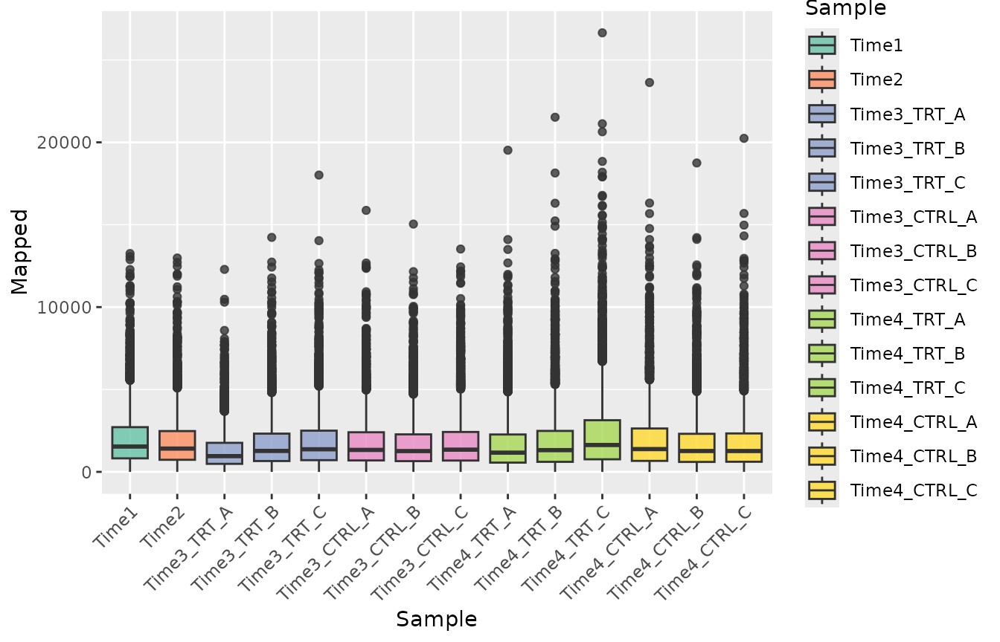
plot_mapped_reads_distribution(object, palette = palette,
alpha = 0.4, type = "density"
)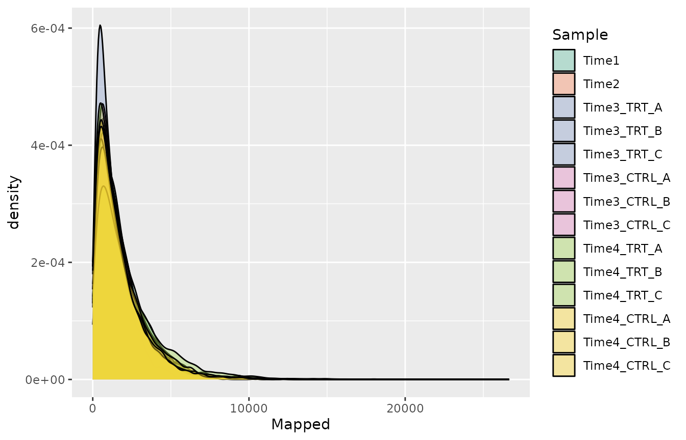
What to look for. The distributions should have a similar shape. A sample whose distribution is much wider or shifted may have had a technical problem (for example during PCR amplification).
Step 3: lost barcodes
A barcode is lost in a sample when it has zero reads. Some loss over time is expected in a dropout screen; a large loss means that the library was not represented well enough (too few cells per barcode).
barcode_lost(object)
#> # A tibble: 14 × 2
#> Sample LostBarcode
#> <fct> <int>
#> 1 Time1 2
#> 2 Time2 18
#> 3 Time3_TRT_A 24
#> 4 Time3_TRT_B 25
#> 5 Time3_TRT_C 24
#> 6 Time3_CTRL_A 6
#> 7 Time3_CTRL_B 2
#> 8 Time3_CTRL_C 20
#> 9 Time4_TRT_A 8
#> 10 Time4_TRT_B 70
#> 11 Time4_TRT_C 58
#> 12 Time4_CTRL_A 45
#> 13 Time4_CTRL_B 34
#> 14 Time4_CTRL_C 51
plot_barcode_lost(object, palette = palette) +
theme(axis.text.x = element_text(angle = 45, hjust = 1))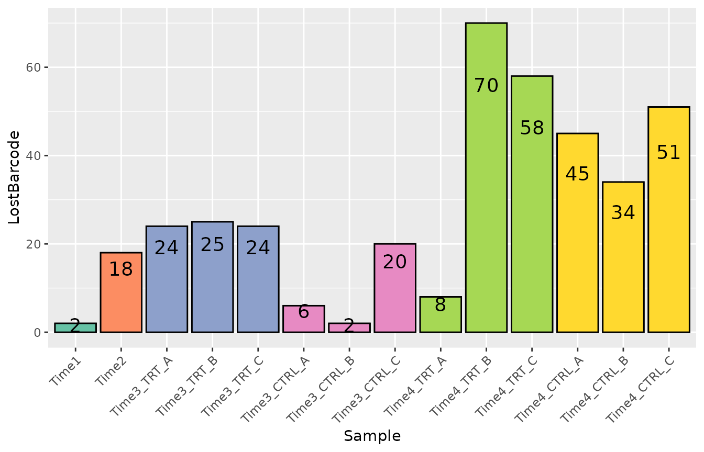
To see which genes lost barcodes in some samples:
plot_barcode_lost_for_gene(object, samples = c("Time3_TRT_A", "Time4_TRT_A"))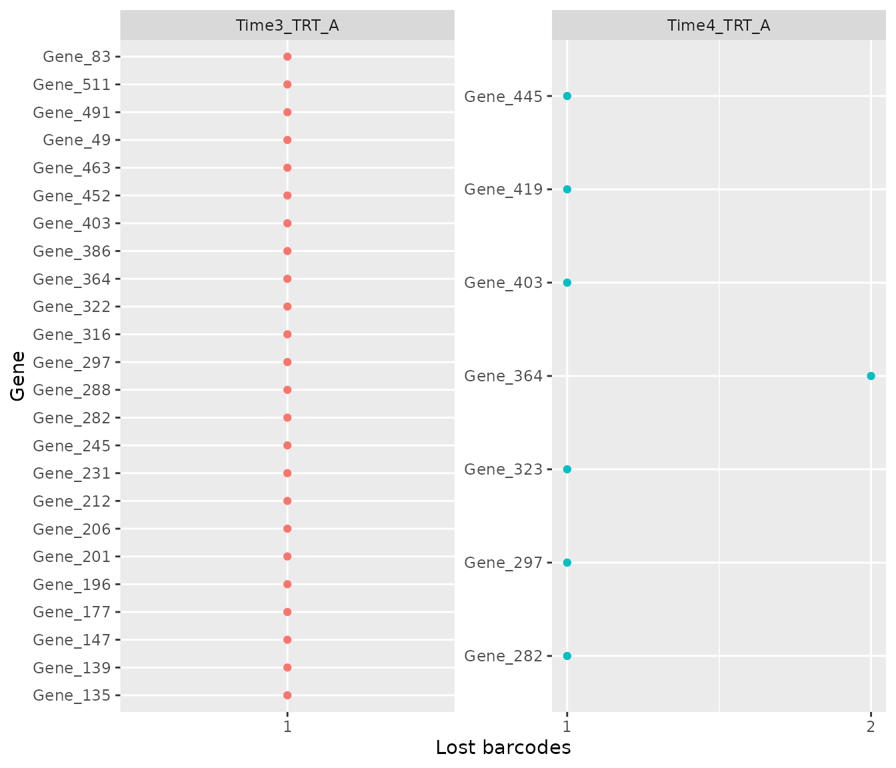
What to look for. A few lost barcodes per sample are normal. A gene that lost most of its barcodes in all samples, including the controls, was not represented well and its results are unreliable.
Step 4: agreement between replicates
plot_replicate_correlation() shows the correlation of
the log2 counts per million between every pair of samples.
plot_replicate_correlation(object)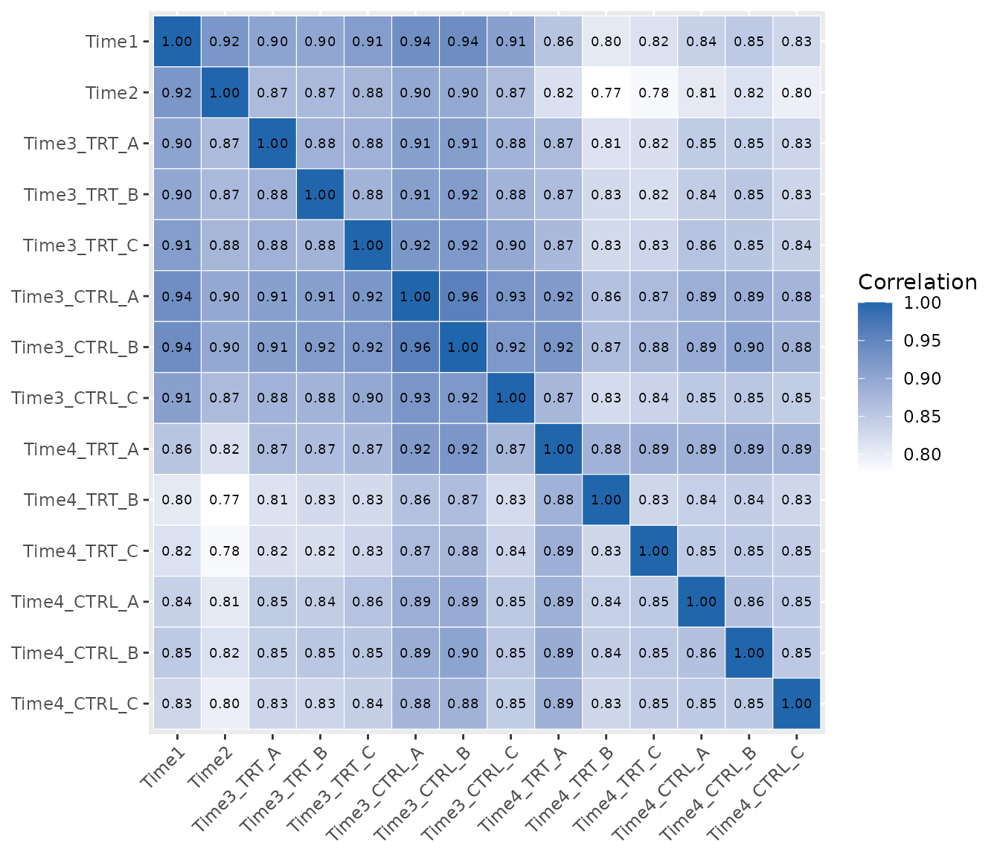
What to look for. Replicates of the same condition (the blocks along the diagonal) should be the most correlated samples. A replicate with a low correlation to its partners may be an outlier: check it in the next plots before deciding whether to remove it.
Step 5: evenness of the library
The Gini index measures how unevenly the reads are spread over the barcodes: 0 means that every barcode has the same number of reads, 1 that a single barcode has all of them.
compute_gini(object)
#> # A tibble: 14 × 2
#> Sample Gini
#> <fct> <dbl>
#> 1 Time1 0.420
#> 2 Time2 0.434
#> 3 Time3_TRT_A 0.444
#> 4 Time3_TRT_B 0.445
#> 5 Time3_TRT_C 0.443
#> 6 Time3_CTRL_A 0.437
#> 7 Time3_CTRL_B 0.440
#> 8 Time3_CTRL_C 0.444
#> 9 Time4_TRT_A 0.477
#> 10 Time4_TRT_B 0.482
#> 11 Time4_TRT_C 0.482
#> 12 Time4_CTRL_A 0.470
#> 13 Time4_CTRL_B 0.466
#> 14 Time4_CTRL_C 0.471
plot_gini(object, palette = palette)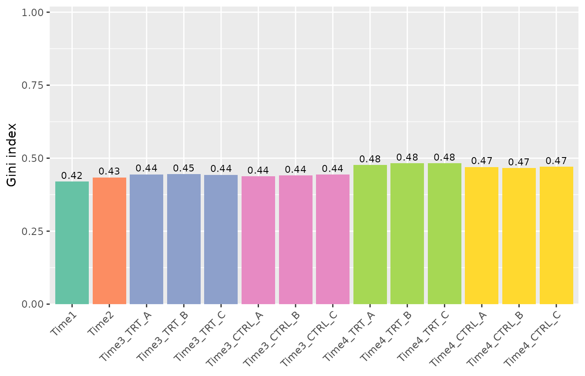
What to look for. In a dropout screen the Gini index usually increases slowly over time, as some barcodes are depleted. A sudden jump, or a large difference between replicates, suggests a bottleneck (too few cells were kept at some step). Here it increases from about 0.42 to 0.48: a normal trend.
Step 6: overall structure of the samples
The multidimensional scaling (MDS) plot places similar samples close to each other. By default the points are labelled by sample:
plot_mds(object)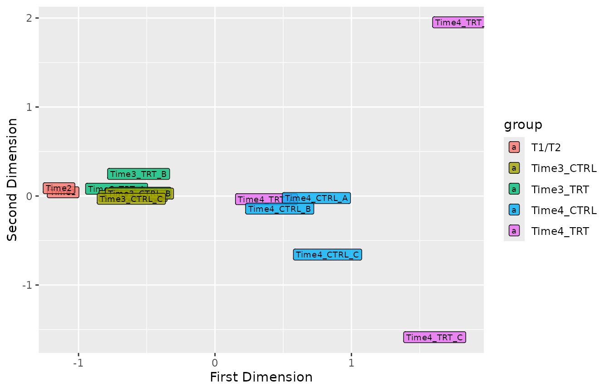
The groups argument colors the samples by any variable,
for example by treatment or by time point:
samples <- get_sample_table(object)
plot_mds(object, groups = factor(samples$Treatment))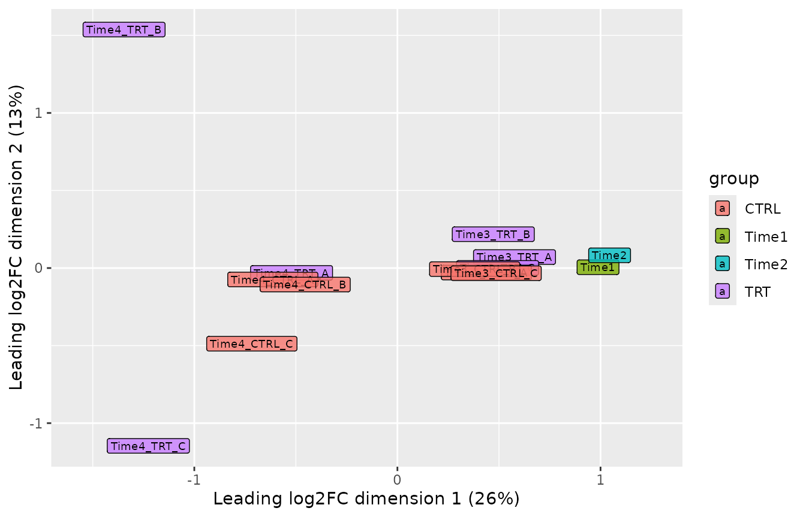
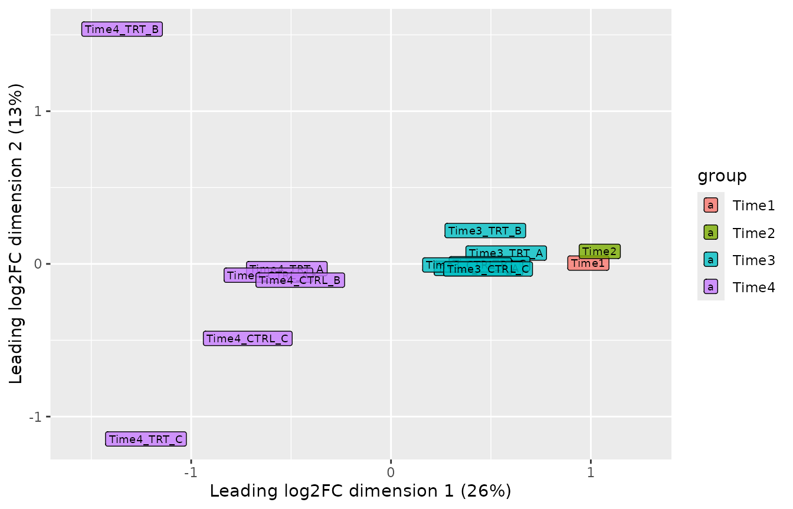
plot_pca() shows the samples on the components of a
principal component analysis of the log2 normalized counts (with the
normalization chosen in normalize_data()), with the share
of the variability each component explains on the axes;
components selects other components. Unlike the MDS, which
uses the most variable barcodes, it uses all of them, so the two plots
are a check of each other:
plot_pca(object)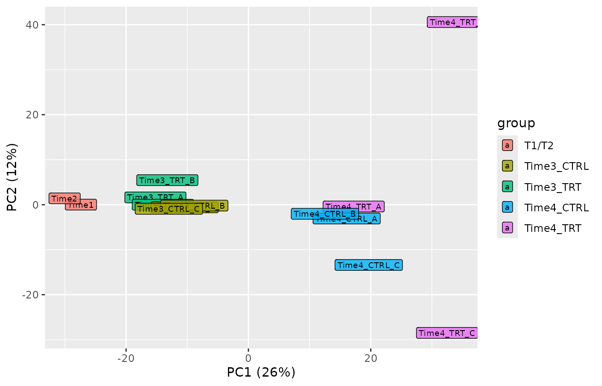
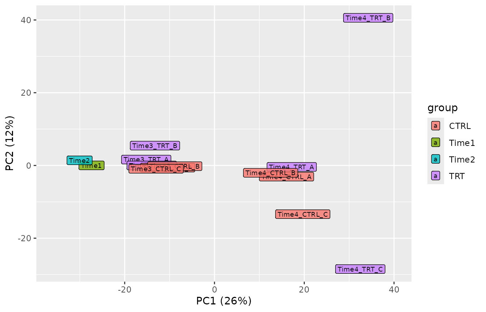
plot_explained_variance() shows how much of the
variability each principal component explains
(cumulative = TRUE for the cumulative proportion).
plot_explained_variance(object)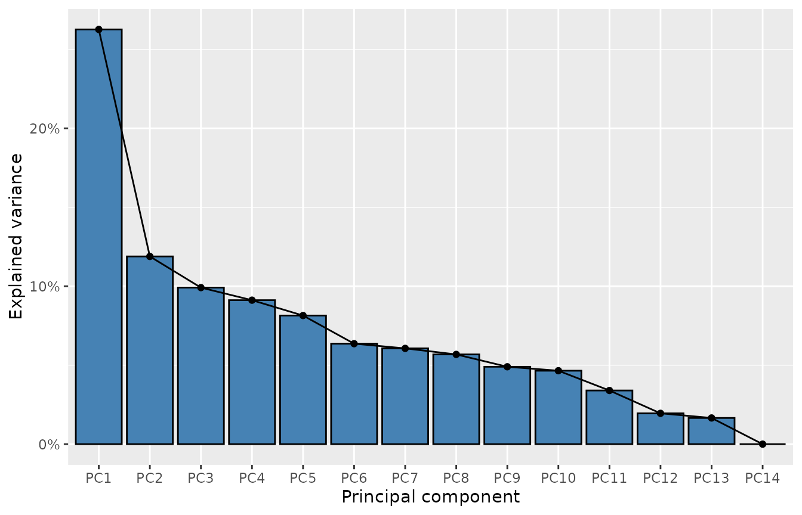
plot_explained_variance(object, cumulative = TRUE)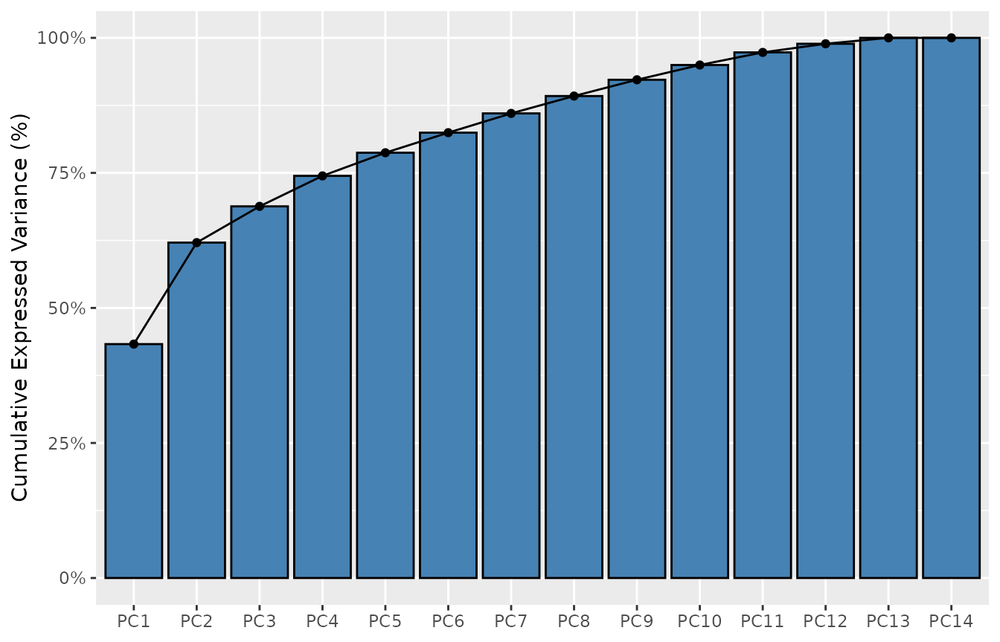
What to look for. Replicates should be close to each other. Samples usually separate first by time point (cells change as they grow) and then by treatment. A replicate far from its group is a candidate outlier.
In this dataset the samples separate by time point along the first
dimension, as expected. Two treated replicates at Time4,
Time4_TRT_B and Time4_TRT_C, are far from the
other samples along the second dimension; Time4_TRT_B also
has the most lost barcodes and the lowest correlations with the other
samples. They are worth a closer look. Removing a replicate should be
justified by a technical reason; otherwise keep it, and use the
replicate-aware methods of tutorial 3, which take this variability into
account.
Step 7: choosing the normalization
normalize_data() offers three methods:
| Method | Divides the counts of each sample by | Use it when |
|---|---|---|
"cpm" (default) |
Its total number of reads | Most screens |
"tmm" |
Its total number of reads, corrected with the edgeR TMM factors | Strong hits deplete a large part of the library, so the total is biased |
"control" |
The reads of control barcodes (e.g. non-targeting shRNAs) | The library has control barcodes that are not affected by the treatment |
A quick way to decide between "cpm" and
"tmm" is to compare them: if they agree, the default is
fine.
object_tmm <- normalize_data(object, method = "tmm")
# The normalized counts are the raw counts divided by the effective library
# sizes, so their ratio is the inverse ratio of the sizes
ratio <- get_normalization(object)$effective_library_size /
get_normalization(object_tmm)$effective_library_size
tibble(Sample = names(ratio), TMM_over_CPM = round(ratio, 3))
#> # A tibble: 14 × 2
#> Sample TMM_over_CPM
#> <chr> <dbl>
#> 1 Time1 0.983
#> 2 Time2 0.997
#> 3 Time3_TRT_A 0.998
#> 4 Time3_TRT_B 0.987
#> 5 Time3_TRT_C 0.998
#> 6 Time3_CTRL_A 0.983
#> 7 Time3_CTRL_B 0.982
#> 8 Time3_CTRL_C 0.992
#> 9 Time4_TRT_A 1.01
#> 10 Time4_TRT_B 1.02
#> 11 Time4_TRT_C 1.02
#> 12 Time4_CTRL_A 1.00
#> 13 Time4_CTRL_B 1.01
#> 14 Time4_CTRL_C 1.01Here the two methods differ by at most about 2%, so we keep the
default. With control barcodes the call would be
normalize_data(object, method = "control", control_barcodes = my_controls),
where my_controls is the vector of their identifiers.
The normalization is used by the whole analysis: the frequencies, the
Z-scores, the plots and the edgeR/limma based methods of tutorial 3
(CAMERA, ROAST, FRY), which model the raw counts with the effective
library sizes as offsets. Changing it with normalize_data()
takes effect at once everywhere. get_normalization() shows
the method in use.
Checklist
The next tutorial, 3. Finding and validating hits, uses this object.
sessionInfo()
#> R version 4.6.1 (2026-06-24)
#> Platform: x86_64-pc-linux-gnu
#> Running under: Ubuntu 24.04.5 LTS
#>
#> Matrix products: default
#> BLAS: /usr/lib/x86_64-linux-gnu/openblas-pthread/libblas.so.3
#> LAPACK: /usr/lib/x86_64-linux-gnu/openblas-pthread/libopenblasp-r0.3.26.so; LAPACK version 3.12.0
#>
#> locale:
#> [1] LC_CTYPE=C.UTF-8 LC_NUMERIC=C LC_TIME=C.UTF-8
#> [4] LC_COLLATE=C.UTF-8 LC_MONETARY=C.UTF-8 LC_MESSAGES=C.UTF-8
#> [7] LC_PAPER=C.UTF-8 LC_NAME=C LC_ADDRESS=C
#> [10] LC_TELEPHONE=C LC_MEASUREMENT=C.UTF-8 LC_IDENTIFICATION=C
#>
#> time zone: UTC
#> tzcode source: system (glibc)
#>
#> attached base packages:
#> [1] stats graphics grDevices utils datasets methods base
#>
#> other attached packages:
#> [1] ggplot2_4.0.3 dplyr_1.2.1 ScreenR_1.15.16 BiocStyle_2.40.0
#>
#> loaded via a namespace (and not attached):
#> [1] SummarizedExperiment_1.42.0 gtable_0.3.6
#> [3] xfun_0.62 bslib_0.12.0
#> [5] Biobase_2.72.0 lattice_0.22-9
#> [7] vctrs_0.7.3 tools_4.6.1
#> [9] generics_0.1.4 stats4_4.6.1
#> [11] tibble_3.3.1 pkgconfig_2.0.3
#> [13] Matrix_1.7-5 RColorBrewer_1.1-3
#> [15] S7_0.2.2 desc_1.4.3
#> [17] S4Vectors_0.50.3 lifecycle_1.0.5
#> [19] compiler_4.6.1 farver_2.1.2
#> [21] stringr_1.6.0 textshaping_1.0.5
#> [23] statmod_1.5.2 Seqinfo_1.2.0
#> [25] htmltools_0.5.9 sass_0.4.10
#> [27] yaml_2.3.12 pillar_1.11.1
#> [29] pkgdown_2.2.1 jquerylib_0.1.4
#> [31] tidyr_1.3.2 DelayedArray_0.38.2
#> [33] cachem_1.1.0 limma_3.68.5
#> [35] abind_1.4-8 tidyselect_1.2.1
#> [37] locfit_1.5-9.12 digest_0.6.39
#> [39] stringi_1.8.9 purrr_1.2.2
#> [41] bookdown_0.48 labeling_0.4.3
#> [43] fastmap_1.2.0 grid_4.6.1
#> [45] cli_3.6.6 SparseArray_1.12.3
#> [47] magrittr_2.0.5 patchwork_1.3.2
#> [49] S4Arrays_1.12.1 utf8_1.2.6
#> [51] withr_3.0.3 edgeR_4.10.6
#> [53] scales_1.4.0 rmarkdown_2.32
#> [55] XVector_0.52.0 matrixStats_1.5.0
#> [57] otel_0.2.0 ragg_1.5.2
#> [59] evaluate_1.0.5 knitr_1.52
#> [61] GenomicRanges_1.64.0 IRanges_2.46.0
#> [63] rlang_1.3.0 glue_1.8.1
#> [65] BiocManager_1.30.27 BiocGenerics_0.58.1
#> [67] jsonlite_2.0.0 R6_2.6.1
#> [69] MatrixGenerics_1.24.0 systemfonts_1.3.2
#> [71] fs_2.1.0